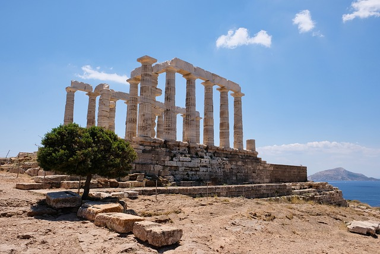
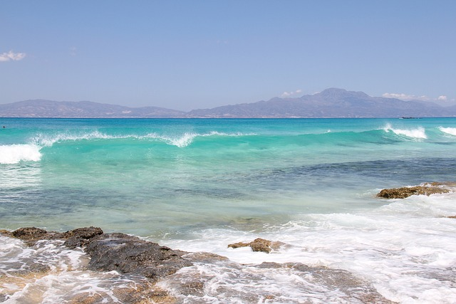
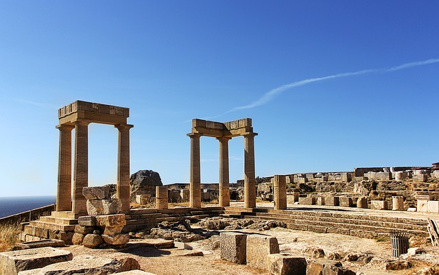

Greece - Family Itinerary
Day 1-3: Athens

- Discover ancient Greek history at the Acropolis and Acropolis Museum, with engaging exhibits for all ages.
- Explore the National Archaeological Museum, home to a vast collection of artifacts from ancient Greece.
- Take a day trip to Cape Sounion to visit the Temple of Poseidon and enjoy swimming at nearby beaches.
Day 4-7: Crete

- Visit the Palace of Knossos, the mythical labyrinth of King Minos, and explore the Archaeological Museum of Heraklion.
- Spend a day at the Cretaquarium, Europe's largest aquarium, featuring marine life from the Mediterranean.
- Relax on the beaches of Elafonissi and Balos, known for their crystal-clear waters and pink sand.
Day 8-10: Rhodes

- Explore the medieval Old Town of Rhodes, a UNESCO World Heritage Site, with its medieval walls, narrow streets, and historic landmarks.
- Visit the Palace of the Grand Master, the Archaeological Museum of Rhodes, and the Street of the Knights.
- Take a day trip to Lindos to visit the ancient Acropolis and relax on the beautiful beaches.